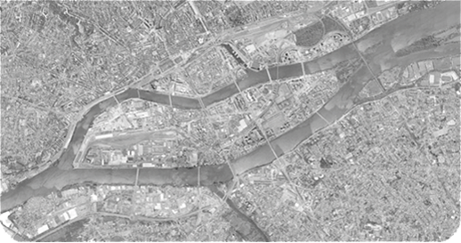
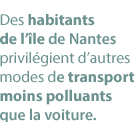

Par quels moyens de transport s'opèrent les déplacements sur l'île de Nantes ?
Quels sont les flux de déplacement ?
| Flux de traversées entre l'île et le centre-ville | Flux de traversées entre l'île et Nantes Sud | Déplacements internes à l'île, sans traversée | Flux de traversées entre le nord et le sud de l'île, sans arrêt en son sein | |||
| 0 % |  | |||||
| 0 % | ||||||
| 0 % | ||||||
| 0 % | ||||||
Quelle a été l'évolution de la fréquentation des transports en commun depuis 16 ans ?
| 1997 | |
|
Nombres de montées et de descentes par jour |
|
|
0

|
|
|
0
|
|
|
0
|
|


Sondages
|  |
L' île de Nantes tend elle vraiment vers une mobilité durable?
Qu'en pensent les habitants de l'île ?
|
"Faire de Nantes une ville équilibrée dans ses déplacements"
Le dicton l'affirme : les chiffres ne mentent jamais. Ceux concernant les déplacements de l'Île de Nantes indiquent que les nantais privilégient toujours les véhicules à moteur pour circuler dans et à travers l'île. Mais si les chiffres ne mentent pas, ils peuvent omettre un certain nombre de nuances... Pour mieux comprendre le phénomène, Yan Le Gal, directeur d'études et de projets à l'Agence d'urbanisme de l'agglomération nantaise (Auran), apporte son avis d'expert.
Les véhicules à moteur (voitures, deux-roues motorisées) restent les moyens de transport privilégiés sur l'Île. Pourtant, Nantes est reconnue pour son engagement vert : peut-on considérer ce constat comme un échec ?
«Permettez-moi de vous répondre en prenant le problème différemment. En 2008, une enquête Insee a été réalisée sur les transports «verts» de l'île. La même a été reconduite pour 2012 et les chiffres sont très intéressants. En quatre ans, les déplacements piétons ont gagné 2,5 points, les vélos 2,5 aussi, et les transports en commun 1 point. C'est encourageant, mais le réel chiffre qui nous pousse à être optimistes, c'est celui des voitures, qui a baissé de 7 points! Pour tout vous avouer, en 2012, la ville de Nantes a atteint voire même dépassé les objectifs fixés pour 2015. Les élus se rendent compte que leur politique est efficace et nous nous projetons désormais vers 2030. Ce que nous voulons accomplir, c'est augmenter l'attractivité des autres modes de transports, ceux que l'on pourrait qualifier d'alternatifs. Nous voulons faire de Nantes une ville équilibrée dans ses déplacements.»
Donc pensez-vous qu'il faudrait « éduquer » les citoyens à plus employer les transports en commun ?
«Ce qui est certain avec les transports en commun, c'est qu'il y a encore des efforts à fournir. Dans certaines villes européennes comme Zurich ou Brême, ils représentent 10 à 15 % de plus. Alors faut-il «éduquer» les gens ? Je n'aime pas ce terme, «éduquer». Je dirais simplement qu'il faut faire mieux connaître, car le réseau n'est pas assez appréhendé par les gens. Cela passe d'ailleurs aussi par le datajournalisme. D'autre part, n'oublions pas qu'il n'y a pas que les transports en commun : le cocktail gagnant, qui ne coûte presque rien, ce sont les piétons, le vélo, et le covoiturage. Ce que nous devons faire, c'est augmenter le plaisir de marcher, de faire du vélo et de se déplacer à plusieurs.»
Vous parlez d'augmenter le plaisir. Quels sont vos projets pour rendre l'île plus verte, plus agréable à arpenter ou traverser ?
«Ce que nous souhaitons, c'est permettre aux Nantais de gagner du temps en les faisant aller moins vite. Pour cela, il y aura un chronobus qui sillonnera l'île d'est en ouest et inversement. Une ligne de bus sera mise en place pour chaque pont. Pour plus tard, nous souhaiterions rajouter un tramway qui liera la gare au sud-ouest de l'île. Vous savez, le tram, c'est du vert qui roule, 250 piétons qui font une pause. D'un autre côté, je sais que l'on parle beaucoup de gratuité des transports en commun, mais personnellement je suis contre. La gratuité coûte cher. En réalité ce n'est pas le problème. Notre rôle est de rendre les transports attractifs, pas gratuits !»
Sources : Atlas de l'Ile de Nantes 2012 - AURAN - Semitan.
www.terristoires.info
Journalisme : Benoit Baylé, Lucie France / Graphisme : Estelle Crochet, Charlotte Cossard / Développement : Virginie Robidou, Élise Morineau.